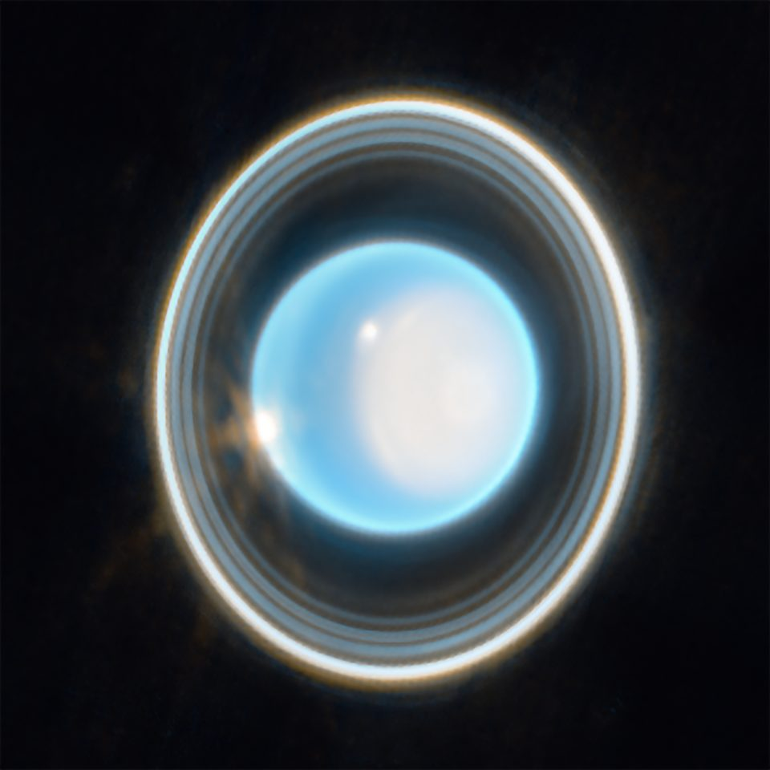

Urano
El gigante de hielo que gira tumbado: un planeta turquesa con estaciones de 42 años de día o de noche.

Urano fue el primer planeta descubierto con un telescopio. Lo encontró el músico y astrónomo William Herschel el 13 de marzo de 1781, desde el jardín de su casa en Bath (Inglaterra). Al principio creyó que era un cometa. Con su hallazgo, el tamaño conocido del sistema solar se duplicó de golpe.
Un planeta tumbado
Lo más extraño de Urano es su inclinación: su eje está girado 98 grados, así que el planeta rueda alrededor del Sol tumbado de lado. Lo más probable es que un choque con un cuerpo del tamaño de la Tierra lo volcara hace miles de millones de años.
El resultado son las estaciones más extremas del sistema solar. Durante su año de 84 años terrestres, cada polo pasa 42 años seguidos iluminado y otros 42 en completa oscuridad.
Un gigante de hielo
Urano y Neptuno forman la familia de los gigantes de hielo. Bajo una atmósfera de hidrógeno, helio y metano, la mayor parte del planeta es un fluido caliente y denso de agua, amoníaco y metano. El metano de la atmósfera absorbe la luz roja y le da su color azul verdoso.
Urano es el planeta más frío del sistema solar: en su atmósfera se han medido −224 °C, más que en Neptuno, que está más lejos. Por algún motivo que aún no se entiende, apenas desprende calor interno.


Anillos oscuros y lunas con nombres de teatro
Urano tiene 13 anillos finos y oscuros, descubiertos en 1977 al observar cómo tapaban la luz de una estrella. También tiene 29 lunas conocidas, que no llevan nombres mitológicos sino de personajes de Shakespeare y Alexander Pope: Titania, Oberón, Ariel, Umbriel, Puck y Miranda, entre otras.
Miranda es una de las lunas más raras del sistema solar: parece hecha de piezas mal encajadas, con cañones de hasta 20 km de profundidad. El acantilado Verona Rupes podría ser el más alto del sistema solar.
Solo una visita
Solo una nave ha estado cerca de Urano: la Voyager 2, que pasó junto a él en enero de 1986. En unas pocas horas descubrió diez lunas nuevas y dos anillos. La NASA considera prioritaria una futura misión que orbite Urano y estudie su interior.
Vídeos para entenderlo mejor
- El Planeta URANO como nunca antes lo habías visto [Documental Astrum Español]Astrum Español · 292 mil visualizaciones
- Urano 101 | National Geographic en EspañolNational Geographic España · 100 mil visualizaciones
Los vídeos son de YouTube y de sus autores. Se cargan solo al pulsar sobre ellos. Ver todos los vídeos →